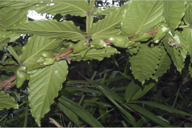
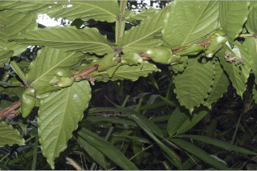
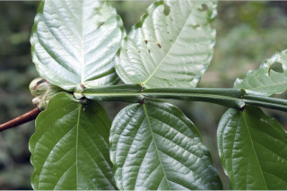
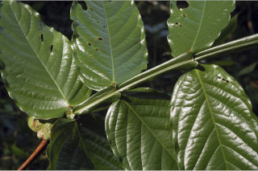
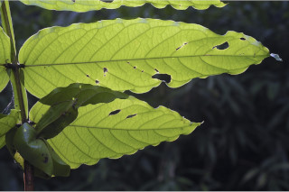
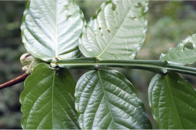
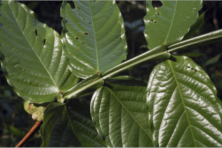
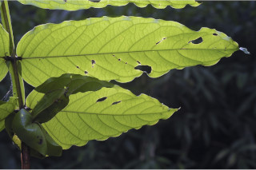

| Leaves : | Leaves compound , pinnate , alternate , distichous , pulvinate ; rachis 30 cm or more long, distinctly winged ; wings obcordate ; stipules paired, foliaceous , to 7 (including apex ) x 2 cm, lanceolate , caudate ; appendage at the base of stipule oblanceolate or reniform , 4 x 5 cm; leaflets 4-6 pairs, opposite , sessile , pink or white and pendulous when young, lamina 12-32 x 6-10 cm, oblong-lanceolate , lowest pairs usually narrow ovate , apex caudate , base rounded or subcordate , margin entire , subcoriaceous ; midrib impressed above; secondary_nerves ca. 12 pairs, looped ; tertiary_nerves reticulate . |


 


 




